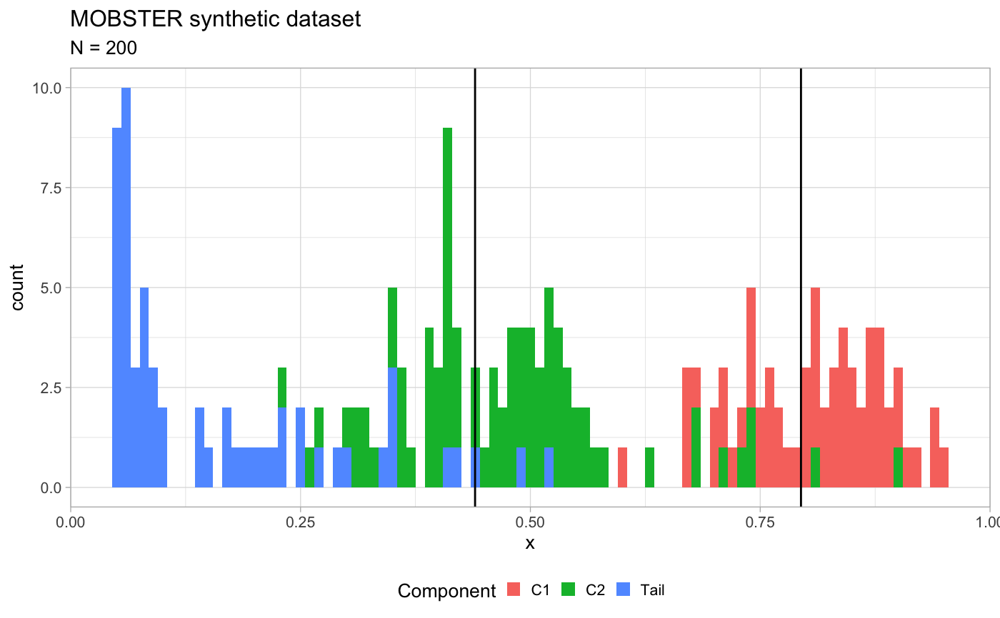
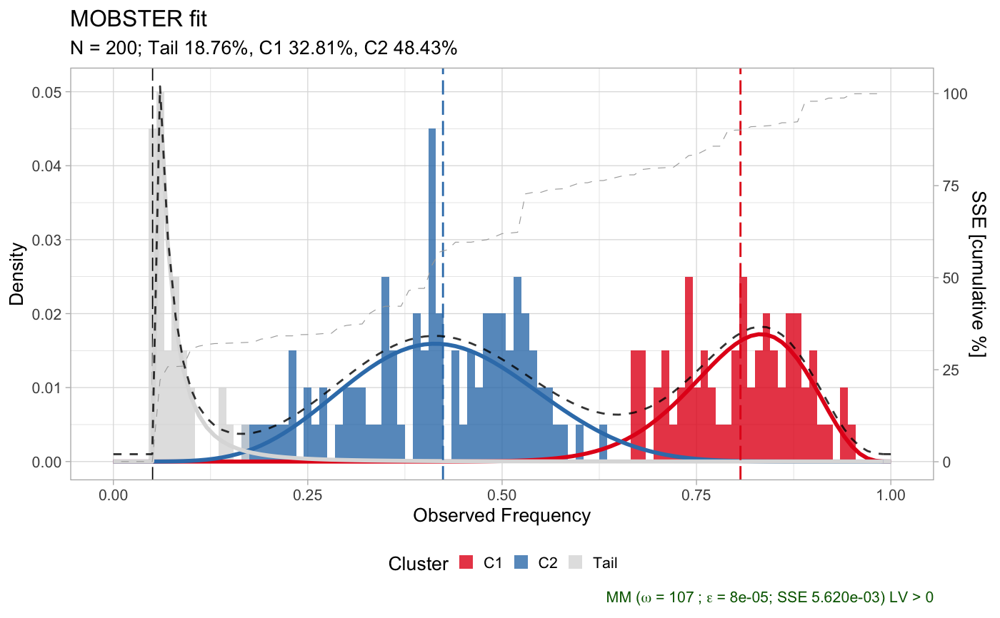
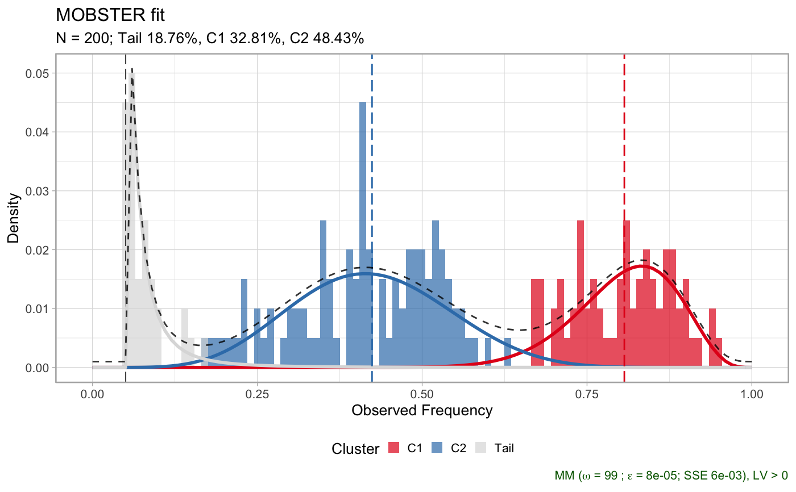
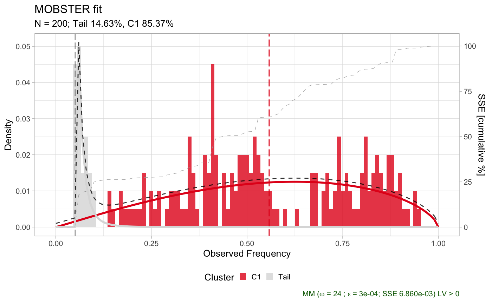
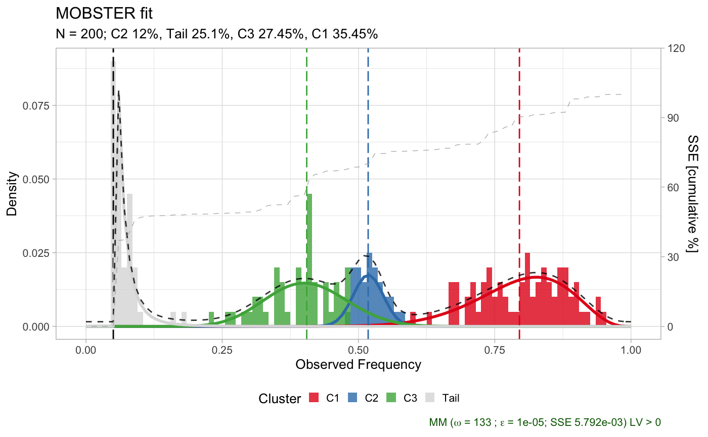

mobster_fit.RdThis function fits the mixure of Beta distributions with a power-law Pareto
Type-I tail (optional). The function performs model selection for different mixtures, which
the user specify with the input parmeters. The function return a list of all fits computed
(objects of class dbpmm), the best fit, a table with the results of the fits and a
variable that specify which score has been used for model selection. The fitting of each model
also runs the function choose_clusters which implements a simple heuristic to filter
out small clusters from the fit output.
mobster_fit(x, K = 1:3, samples = 5, init = "peaks", tail = c(TRUE, FALSE), epsilon = 1e-10, maxIter = 2000, fit.type = "MM", seed = 12345, model.selection = "reICL", trace = FALSE, parallel = TRUE, pi_cutoff = 0.02, N_cutoff = 10)
| x | Input tibble (or data.frame) which is required to have a VAF column which reports the
frequency of the mutant allele (this should be computed adjusting the raw VAF for tumour purity
and copy number status). See also package |
|---|---|
| K | A vector with the number of Beta components to use. All values of |
| samples | Number of fits that should be attempted for each configuration of the model tested. |
| init | Initial values for the paremeters of the model. With |
| tail | If |
| epsilon | Tolerance for convergency estimation. For MLE fit this is compared to the differential of the negative log-likelihood (NLL); for MM fit the largest differential among the mixing proportions (pi) is used. |
| maxIter | Maximum number of steps for a fit. If convergency is not achieved before these steps, the fit is interrupted. |
| fit.type | A string that determines the type of fit. |
| seed | Seed for the random numbers generator |
| model.selection | Score to minimize to select the best model; this has to be one of |
| trace | If |
| parallel | Optional parameter to run the fits in parallel (default), or not. |
| pi_cutoff | Parameter passed to function |
| N_cutoff | Parameter passed to function |
A list of all fits computed (objects of class dbpmm), the best fit, a table with the results of the fits and a
variable that specify which score has been used for model selection.
#>#>#>#> #>#> #> #>#> #>#>#> #>#> #>#> $data #> # A tibble: 200 x 2 #> VAF cluster #> <dbl> <chr> #> 1 0.733 C1 #> 2 0.935 C1 #> 3 0.847 C1 #> 4 0.671 C1 #> 5 0.796 C1 #> 6 0.754 C1 #> 7 0.895 C1 #> 8 0.863 C1 #> 9 0.827 C1 #> 10 0.822 C1 #> # … with 190 more rows #> #> $model #> $model$a #> C1 C2 #> 16.40514 16.78235 #> #> $model$b #> C1 C2 #> 4.247342 21.373956 #> #> $model$shape #> [1] 3.130547 #> #> $model$scale #> [1] 0.05 #> #> $model$pi #> Tail C1 C2 #> 0.2919682 0.3054546 0.4025772 #> #> #> $plot#># Fit, default models, changed epsilon for convergence x = mobster_fit(x$data, epsilon = 1e-5)#> [ MOBSTER fit ~ N = 200 ] #> #> - Beta(s) K = 1,2,3 ~ Pareto tail : ON/OFF; #> - Fit by Moments-matching (s = 2000, i = peaks, ε = 1e-05) scoring with reICL #> - Runs 5 x 3 x 2 = 30 with parallel #> - Clusters filter : π > 0.02 and N > 10 #> #> #> #> MOBSTER fit completed in 0.2 mins #> #> BEST FIT: reICL #> #> [ MOBSTER ] N = 200 points with K = 2 Beta clusters, fit by MM in 59 steps [CONVERGED] #> #> Components (fit) #> Tail n = 50 (0.25) Shape = 3.6 #> Beta C1 n = 68 (0.34) Mean = 0.8 #> Beta C2 n = 82 (0.41) Mean = 0.44 #> #> Scores (model selection) #> NLL BIC AIC entropy ICL reduced.entropy reICL size #> -103.9009 -160.1169 -189.8018 9.93376 -150.1832 7.955082 -152.1619 9#> [ MOBSTER ] N = 200 points with K = 2 Beta clusters, fit by MM in 59 steps [CONVERGED] #> #> Components (fit) #> Tail n = 50 (0.25) Shape = 3.6 #> Beta C1 n = 68 (0.34) Mean = 0.8 #> Beta C2 n = 82 (0.41) Mean = 0.44 #> #> Scores (model selection) #> NLL BIC AIC entropy ICL reduced.entropy reICL size #> -103.9009 -160.1169 -189.8018 9.93376 -150.1832 7.955082 -152.1619 9#> $`21`#> #> $`16`#> #> $`26`#>